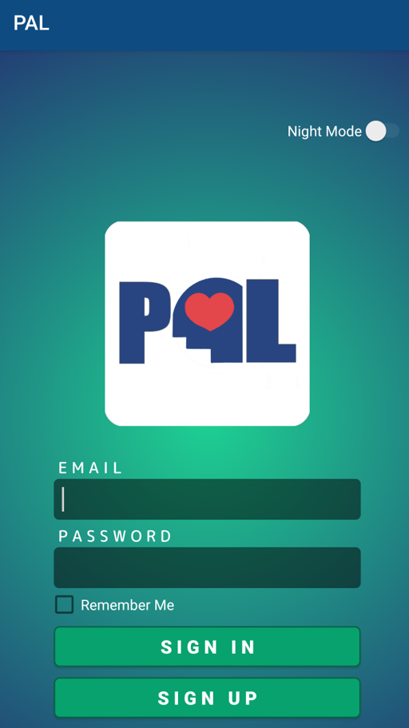
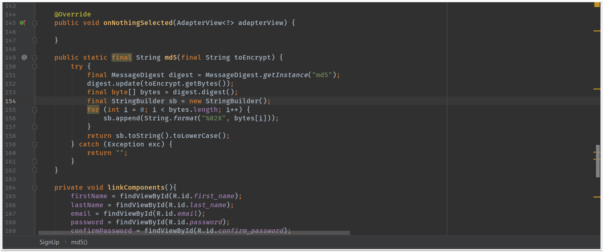

Mobile Development
The PAL Application’s purpose is to aid students that are depressed, having suicidal thoughts, and those who are having mental issues. Within the app, Counselors will be able to assist students to see how they are progressing throughout the school year or semester. Implementing new features have been troublesome due to the droplet and server issues. Therefore, progress has been slow, but more features will be added. Within the app, security features have been added to make sure user’s data is protected. A new design has been made and the registration process has been reduced by half to make registration much easier. A new theme has also been included for usage at night time.
The usage of hashing is more effective due to its irreversible operation. By design, symmetric encryption is a reversible operation. This means that the encryption key must be accessible to the application and will be used for every password verification. If the encrypted passwords are stolen, the attackers only need to determine the symmetric key used by the application. Once that key becomes known, through a breach or through brute force attacks on a weak key, all passwords are instantly decrypted and accessible. This is not a good place to be. The point of hashing a password is that when somebody gets their hands on the hash, they are not meant to be able to reverse it. This is the entire purpose of this security measure. The entire purpose of a hash is to be irreversible. If you could get the plain-text password back it would defeat the purpose of the hash, and would also be a security vulnerability.
Development for the PAL application is still in development and more features will be applied in the future. Such features will include a media section that includes motivational speeches like Ted Talks and will also provide videos with humor to ease the user’s depression. Sometimes the best medicine is just laughter. Other features will be implementing a story section for student’s to share their stories, letting the student’s to also help one another rather than just relying on their counselor. As a result, these features will aid students in a positive way even when their counselor is unavailable to chat. As for now, the new security feature has been added to make sure users are protected. Although there is a slight change within the logo, a new logo is still in the process to make the app more appealing. At the moment, new theme colors have been added, a new security feature, and new registration process has been added.